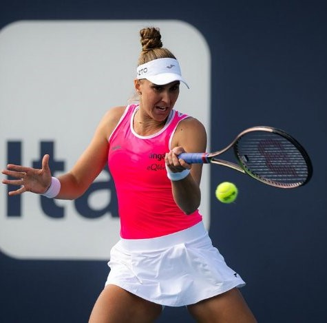
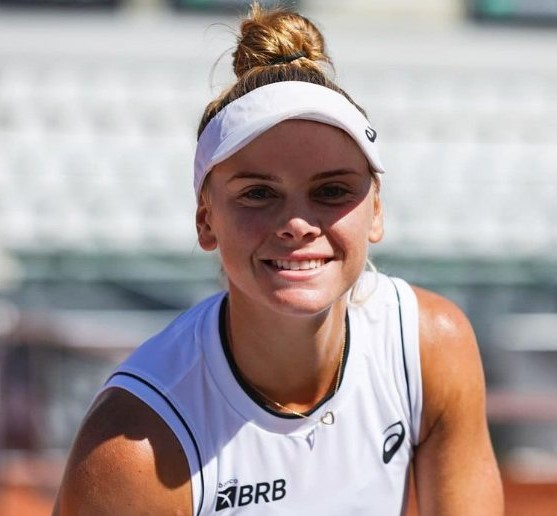
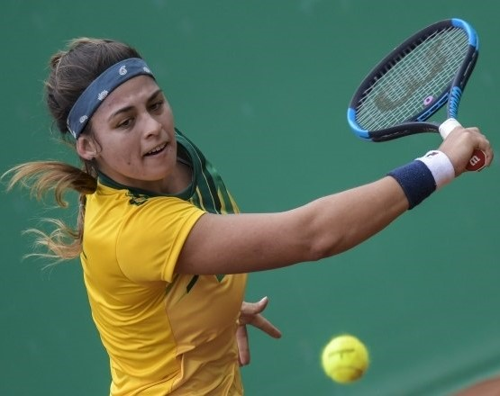
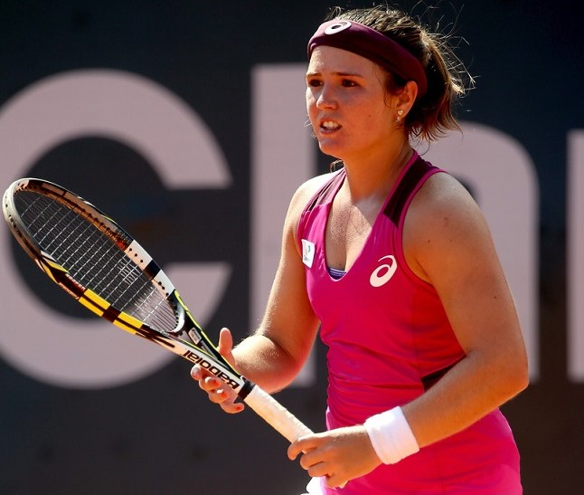

- Beatriz Haddad Maia
- Idade: 26 anos
- Posição no Ranking WTA: 15
- Vencedora de Grands Slam: false
- Torneios Vencidos: "WTA 250 de Nottingham", "WTA 125 de Saint Malo", " WTA 500 de
Sydney"

- Laura
Pigossi
- Idade: 28
- Posição no Ranking WTA: 100
- Vencedora de Grands Slam: false
- Torneios Vencidos: "ITF São Paulo, Brasil", "ITF Cairo, Egito","ITF Hammamet"

- Carolina Meligeni Alves
- Idade: 26
- Posição no Ranking WTA: 175
- Vencedora de Grands Slam: false
- Torneios Vencidos: "ITF São José do Rio Preto, Brasil", "ITF São Paulo, Brasil", "ITF
Itu,
Brasil"

- Gabriela
Cé
- Idade: 29
- Posição no Ranking WTA: 286
- vencedoraGrandslam4: false
- Torneios Vencidos: "ITF Campos do Jordão, Brasil", "ITF Santos, Brasil", "ITF Ribeirão
Preto, Brasil"